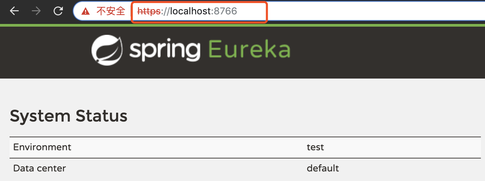
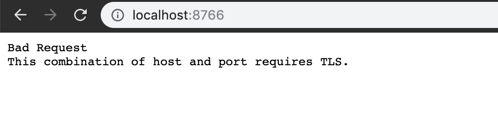
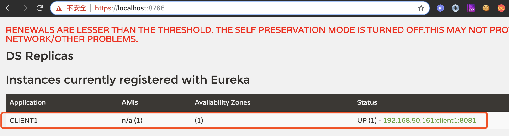

上一篇主要说的是开启http basic认证，从安全角度来讲，基于base64编码，容易被抓包后破解，在公网中很不安全，本文详谈如何在eureka server和eureka client中开启https。
<parent>
<groupId>org.springframework.boot</groupId>
<artifactId>spring-boot-starter-parent</artifactId>
<version>2.0.3.RELEASE</version>
<relativePath/>
</parent>
<properties>
<project.build.sourceEncoding>UTF-8</project.build.sourceEncoding>
<project.reporting.outputEncoding>UTF-8</project.reporting.outputEncoding>
<java.version>1.8</java.version>
<spring-cloud.version>Finchley.RELEASE</spring-cloud.version>
</properties>
<dependencyManagement>
<dependencies>
<dependency>
<groupId>org.springframework.cloud</groupId>
<artifactId>spring-cloud-dependencies</artifactId>
<version>${spring-cloud.version}</version>
<type>pom</type>
<scope>import</scope>
</dependency>
</dependencies>
</dependencyManagement>
1.1、eureka server工程pom：
<!--加上文章头部的公共依赖-->
<dependencies>
<dependency>
<groupId>org.springframework.cloud</groupId>
<artifactId>spring-cloud-starter-netflix-eureka-server</artifactId>
</dependency>
</dependencies>
<build>
<plugins>
<plugin>
<groupId>org.springframework.boot</groupId>
<artifactId>spring-boot-maven-plugin</artifactId>
</plugin>
</plugins>
</build>
1.2、eureka server工程启动类：
import org.springframework.boot.SpringApplication;
import org.springframework.boot.autoconfigure.SpringBootApplication;
import org.springframework.cloud.netflix.eureka.server.EnableEurekaServer;
@SpringBootApplication
@EnableEurekaServer
public class EurekaServerApplication {
public static void main(String[] args) {
SpringApplication.run(EurekaServerApplication.class, args);
}
}
1.3、生成证书
a、生成server工程的证书，使用命令行工具，执行下面的指令：
keytool -genkeypair -alias server -storetype PKCS12 -keyalg RSA -keysize 2048 -keystore server.p12 -validity 3650
输入密钥库口令:
再次输入新口令:
您的名字与姓氏是什么?
[Unknown]: spring
您的组织单位名称是什么?
[Unknown]: spring
您的组织名称是什么?
[Unknown]: spring
您所在的城市或区域名称是什么?
[Unknown]: spring
您所在的省/市/自治区名称是什么?
[Unknown]: spring
该单位的双字母国家/地区代码是什么?
[Unknown]: spring
CN=spring, OU=spring, O=spring, L=spring, ST=spring, C=spring是否正确?
[否]: y
b、同样的方式生成client工程证书，执行下面的指令：
keytool -genkeypair -alias client -storetype PKCS12 -keyalg RSA -keysize 2048 -keystore client.p12 -validity 3650
//。。。同样需要设置密码，回答上面的那些问题
c、分别导出2个p12证书，执行指令：
keytool -export -alias server -file server.crt --keystore server.p12
输入密钥库口令: 这里的密码是生成server证书时设置的密码
存储在文件 <server.crt> 中的证书keytool -export -alias client -file client.crt --keystore client.p12
输入密钥库口令: 这里的密码是生成client证书时设置的密码
存储在文件 <client.crt> 中的证书
d、将server.crt文件导入client.p12证书中，使client端信任server的证书，执行如下指令
keytool -import -alias server -file server.crt -keystore client.p12
输入密钥库口令: 这里的密码是生成client证书密码，密码错误会提示如下信息:
【密码错误时提示的信息：keytool 错误: java.io.IOException: keystore password was incorrect】
所有者: CN=spring, OU=spring, O=spring, L=spring, ST=spring, C=spring
发布者: CN=spring, OU=spring, O=spring, L=spring, ST=spring, C=spring
序列号: 2b87a269
有效期为 Fri Oct 04 20:11:07 CST 2019 至 Mon Oct 01 20:11:07 CST 2029
证书指纹:
MD5: EF:A3:6B:32:DE:8F:E4:34:46:E6:0D:48:B9:8F:B8:7E
SHA1: AE:42:78:14:D8:6B:B2:E9:46:F4:76:E8:D9:D0:51:E0:3A:E6:C9:2E
SHA256: 54:6D:93:7E:B3:D3:C4:49:87:84:9D:46:66:B1:B8:1B:95:5B:DC:05:9A:8A:A4:DF:43:E4:A7:A7:4A:81:F7:B0
签名算法名称: SHA256withRSA
主体公共密钥算法: 2048 位 RSA 密钥
版本: 3
扩展:
#1: ObjectId: 2.5.29.14 Criticality=false
SubjectKeyIdentifier [
KeyIdentifier [
0000: 6C 1A E4 01 EB 84 0B C2 90 97 81 3D DB 0D C3 F1 l..........=....
0010: 4A FB 2A F4 J.*.
]
]
是否信任此证书? [否]: y
证书已添加到密钥库中
e、将client.crt文件导入server.p12文件，使server服务信任client的证书，执行如下指令：
keytool -import -alias client -file client.crt -keystore server.p12
输入密钥库口令: 这里的密码是生成server证书密码
所有者: CN=cloud, OU=cloud, O=cloud, L=cloud, ST=cloud, C=cloud
发布者: CN=cloud, OU=cloud, O=cloud, L=cloud, ST=cloud, C=cloud
序列号: 6ea2a01
有效期为 Fri Oct 04 20:27:38 CST 2019 至 Mon Oct 01 20:27:38 CST 2029
证书指纹:
MD5: E9:22:2C:8D:C4:08:27:AD:02:75:93:31:C2:17:35:8E
SHA1: BB:B0:9A:3A:98:43:5E:02:FC:8A:BC:85:33:DD:82:4A:4E:DF:3A:5C
SHA256: 20:96:61:27:D1:CA:55:E5:B6:0E:41:CA:BC:84:F8:8F:1F:D8:25:87:10:50:90:E3:BC:12:39:35:74:16:4A:B3
签名算法名称: SHA256withRSA
主体公共密钥算法: 2048 位 RSA 密钥
版本: 3
扩展:
#1: ObjectId: 2.5.29.14 Criticality=false
SubjectKeyIdentifier [
KeyIdentifier [
0000: 91 E6 46 EF 4C 9E 88 B1 2F 63 12 4B 39 53 9D 32 ..F.L.../c.K9S.2
0010: EF 0F 42 F9 ..B.
]
]
是否信任此证书? [否]: y
证书已添加到密钥库中
1.4、将生成的server.p12、server.crt、client.crt三个文件放在eureka server工程resources目录下。
1.5、添加eureka server工程相关resources配置文件
application-https.yml：
server:
port: 8766
ssl:
enabled: true
key-store: classpath:server.p12
key-store-password: hello2019 #生成server证书时设置的密码
key-store-type: PKCS12
key-alias: server
eureka:
instance:
hostname: localhost
securePort: ${server.port}
securePortEnabled: true
nonSecurePortEnabled: false
homePageUrl: https://${eureka.instance.hostname}:${server.port}/
statusPageUrl: https://${eureka.instance.hostname}:${server.port}/
client:
registerWithEureka: false
fetchRegistry: false
serviceUrl:
defaultZone: https://${eureka.instance.hostname}:${server.port}/eureka/
server:
waitTimeInMsWhenSyncEmpty: 0
enableSelfPreservation: falseapplication.yml：
spring:
profiles:
active: https
1.6、启动eureka server工程，执行指令：
mvn spring-boot:run -Dspring.profiles.active=https
访问：https://localhost:8766

由此看出确实使用的是https，不妨在试一下访问：http://localhost:8766

2.1、client工程pom文件：
<!--加上文章头部的公共依赖-->
<dependencies>
<dependency>
<groupId>org.apache.httpcomponents</groupId>
<artifactId>httpclient</artifactId>
<version>4.5.5</version>
</dependency>
<dependency>
<groupId>org.springframework.cloud</groupId>
<artifactId>spring-cloud-starter-netflix-eureka-client</artifactId>
</dependency>
</dependencies>
<build>
<plugins>
<plugin>
<groupId>org.springframework.boot</groupId>
<artifactId>spring-boot-maven-plugin</artifactId>
</plugin>
</plugins>
</build>
2.2、client工程启动类：
import org.springframework.boot.SpringApplication;
import org.springframework.boot.autoconfigure.SpringBootApplication;
import org.springframework.cloud.netflix.eureka.EnableEurekaClient;
@SpringBootApplication
@EnableEurekaClient
public class EurekaClientApplication {
public static void main(String[] args) {
SpringApplication.run(EurekaClientApplication.class, args);
}
}
2.2、client工程resources配置文件
先将client.crt、client.p12、server.crt三个文件放在client工程的resources目录下。
application.yml：
spring:
profiles:
active: httpsapplication-https.yml：
server:
port: 8081
spring:
application:
name: client1
eureka:
client:
securePortEnabled: true
ssl:
key-store: client.p12
key-store-password: hello2020
serviceUrl:
defaultZone: https://localhost:8766/eureka/这里没有指定整个应用实例启用https，仅仅是开启访问eureka server的https配置，自定义eureka.client.ssl.key-store和eureka.client.ssl.key-store-password两个属性，指定client访问server的sslContext配置，需要在代码里指定DiscoveryClient.DiscoveryClientOptionalArgs：
import com.netflix.discovery.DiscoveryClient;
import com.netflix.discovery.shared.transport.jersey.EurekaJerseyClientImpl;
import org.apache.http.ssl.SSLContextBuilder;
import org.springframework.beans.factory.annotation.Value;
import org.springframework.context.annotation.Bean;
import org.springframework.context.annotation.Configuration;
import org.springframework.context.annotation.Profile;
import javax.net.ssl.SSLContext;
import java.io.IOException;
import java.security.KeyManagementException;
import java.security.KeyStoreException;
import java.security.NoSuchAlgorithmException;
import java.security.cert.CertificateException;
/**
* 指定client访问server的sslContext配置
*/
@Profile({"https"})
@Configuration
public class EurekaHttpsClientConfig {
@Value("${eureka.client.ssl.key-store}")
String keyStoreFileName;
@Value("${eureka.client.ssl.key-store-password}")
String keyStorePassword;
@Bean
public DiscoveryClient.DiscoveryClientOptionalArgs discoveryClientOptionalArgs() throws CertificateException, NoSuchAlgorithmException, KeyStoreException, IOException, KeyManagementException {
EurekaJerseyClientImpl.EurekaJerseyClientBuilder builder = new EurekaJerseyClientImpl.EurekaJerseyClientBuilder();
builder.withClientName("eureka-https-client");
SSLContext sslContext = new SSLContextBuilder()
.loadTrustMaterial(
this.getClass().getClassLoader().getResource(keyStoreFileName),keyStorePassword.toCharArray()
)
.build();
builder.withCustomSSL(sslContext);
builder.withMaxTotalConnections(10);
builder.withMaxConnectionsPerHost(10);
DiscoveryClient.DiscoveryClientOptionalArgs args = new DiscoveryClient.DiscoveryClientOptionalArgs();
args.setEurekaJerseyClient(builder.build());
return args;
}
}
2.3、执行指令，启动client工程：
mvn spring-boot:run -Dspring.profiles.active=https访问https://localhost:8766/

可以看到client工程已经成功注册到了server服务上。